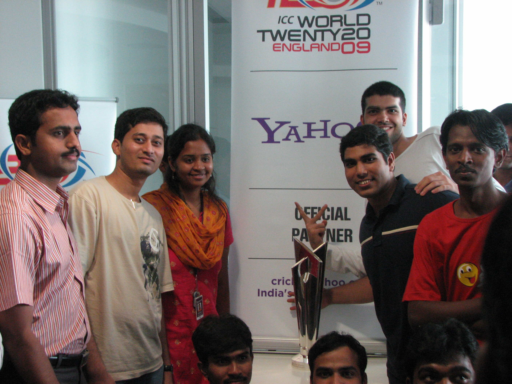
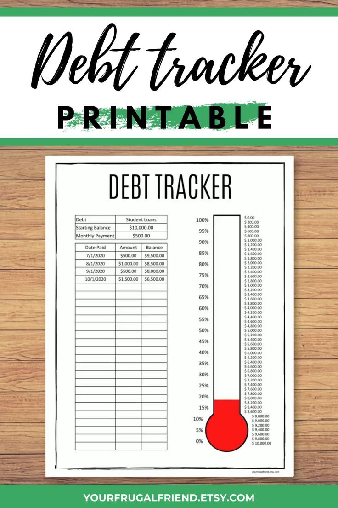
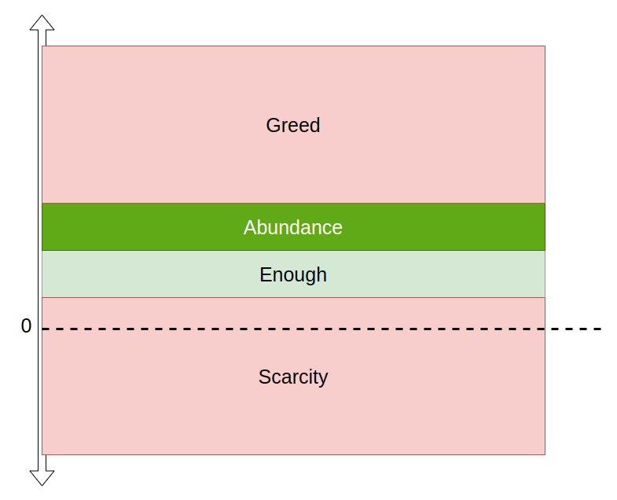

thank you!
how to become Financially Independent?
-- Abhi Sawant
about me
IIT
ex-Yahoo!
ex-Samsung (South Korea)

registered my own software development company in 2014
ex-Mindseed


ex-Flipkart

ex-Amazon India
ex-Amazon USA

why does all this matter to you?
FIRE
Financially Independent, Retired Early
"Retired Early" is optional
achieved FIRE in Dec-2024, at the age of
42
my benefits of becoming FI
- retired from corporate life (aka "rat race")
- master of my time
- 9th grade Maths teacher for under-priviledged children in Govandi, Mumbai
- 2 years full time TFI fellowship
- spreading knowledge about "how to become Financially Independent"
master of my time
- sleep
- hobbies
- most importantly though,
- parents
- not scared of emergencies
what does it mean to be FI?
passive income >> expenses
Rich v/s Wealthy

we want to become Wealthy, not Rich!
i.e. Financially Independent
NOT a Certified Financial Advisor
sharing based on my own knowledge and experience
FI basics
Bunty aur Babli
Note: This is a work of fiction. Names, characters, places and incidents either are products of the author’s imagination or are used fictitiously. Any resemblance to actual events or locales or persons, living or dead, is entirely coincidental.
Bunty
- earns INR 25,000/- per month
- spends 22,500/- on loan EMI, groceries, utilities, entertainment, etc
- i.e. he saves 2,500/- per month
Babli
- earns INR 25,000/- per month
- spends 20,000/- on loan EMI, groceries, utilities, entertainment, etc
- i.e. she saves 5000/- per month
time to become a Crorepati
- Bunty
- 100,00,000 / 2,500 / 12
- = 333 years
- Babli
- 100,00,000 / 5,000 / 12
- = 167 years
Babli-2
- invests in SIP
- at 10% annual compound interest
- how much time will it take to reach 1 Cr?
- remember, Babli-1 had taken 167 years
~31 years
that's the power of COMPOUNDING!
Babli-3
- invests 7,500
- i.e. saves more, and hence invests more
- how much time will it take to reach 1 Cr?
- remember, Babli-2 had taken ~31 years
~27 years
i.e. savings amount has a direct impact on time
Babli-4
- same as Babli-2 (i.e. 5,000 savings) , but increases investments by 10% per year
- how much time will it take to reach 1 Cr?
- remember, Babli-2 had taken ~31 years
- and Babli-3 had taken ~27 years; despite a higher starting amount
~24 years
Chulbuli
- earns 1L per month; i.e. 4 times as much as Bunty and Babli
- but she spends 1L per month
- how much time will it take to reach 1 Cr?
i.e. how much you save and invest matters much more than how much you earn
Bunty v/s Babli
- notice that Babli-4 overtakes Babli-3 at ~10 years
i.e. you can start small, but discipline is important
passive income >> expenses
increase income
- work harder
- work smarter
- upskill (invest in your own education)
- partner / collaborate
- network / improve connections
- work harder and smarter
- great talent cannot beat good talent + great hard work
decrease expenses
focus on needs
- रोटी, कपडा, मकान
- medical needs / insurance
- education (for kids, and self)
reduce wants
- entertainment, social status
- do NOT buy on credit card if cannot pay in full at end of month
- don't eliminate wants completely, else what is life for
lessons
3 step path to FI
- Earn
- Save
- Invest
- you CANNOT reach FI if you skip/miss any step
- you DON'T need anything fancy or risky to reach FI
- most people don't reach FI because they focus only on "Earn"
summary
- you can only invest that which you save, so
- increase savings
- but Savings = Income - Expenses, so
- increase income, and
- decrease expenses
- invest regularly
- don't try to time the market
- start early
- the best time to plant a tree was 5 years ago. the next best time is today!
FI intermediate
good v/s bad debt
good:
- very long term
- low interest rates
- tax benefits
- eg: home loan, education loan, etc
bad:
- short term
- high interest rates
- eg: personal loan, car loan, etc
- not paying credit card balance in FULL, EVERY MONTH is WORST
eliminate loan

increase savings
- pay yourself first
- automate
- start with 10% of income
- slowly, increase savings %
- improve lifestyle at a lesser rate than increase in income
debt / savings trackers
expense tracking
expense tracking ...
- use apps like AndroMoney, EveryDollar, Expensify, Fuelio, Mint, and many more
- excel sheets, google sheets, are most flexible
- more than the tool, you need discipline
- track for a few months before you go to next steps
budget

rinse and repeat
- create and update budget a few times
- needs+wants v/s savings needs to stabilize
- more than the tool, you need discipline; especially for tracking
most importantly, remember that
life is not an excel sheet
have fun!
FI advanced
legal money printing press
fishermen
insurance
term insurance
health insurance
- do NOT confuse insurance and investment
- stay AWAY from ULIPs at all cost
emergency fund
- safety net
- prevent you from doing financial
mistakesblunders due to stressful situations - should be 3-6 months of expenses
- this should be in liquid cash / FD in bank
- this is NOT an investment
- do NOT even think of investments until you have emergency fund in place
passive income >> expenses
modes of investment
- Fixed/Recurring Bank Deposits
- Gold
- Mutual Funds
- Real Estate
- etc
investment
- long term game
- for passive income
- i.e. you should NOT need to monitor it hourly/daily/weekly
stock trading
- stock trading is NOT investment
- volatility is NOT the correct answer
- neither long term, nor passive
- full time job
- do it only if you have time, passion and skill
- you CAN become financially independent without stock trading
- i have!!!
stock trading ...
- you can invest in stocks
- but trading != investment
FI number --Ankur Warikoo

FI number = annual expense * 25
aka Rule of 25
- don't worry that it will change. it will help you plan
- control your expenses
- else, you will NOT reach FI
- expense tracking + budgeting
wrapping up
Bunty v/s Babli after 40 years

- Babli-4 reached 10+ Cr in 40 years while starting at only 5k per month
- start early: compounding needs time to grow
- be disciplined: start small, but increase savings+investment by 10% per year
- be disciplined: invest regularly (don't time the market)
- stay invested: don't exit until you reach FI
tying it all together
- rule of 25 (define your enough number)
- 3 step path to FI
- earn
- save
- save atleast 10-20% of monthly income; pay yourself first; automate
- live below your means (remember Chulbuli)
- don't improve lifestyle at same rate of increase in income
- invest
tying it all together ...
- have adequate safety nets
- insurance
- emergency fund
- these will allow you to
- explore more risky investments
- not withdraw your investments prematurely
you CANNOT achieve FI without this
take aways
- 5 most important things to achieve FI are
- passive income >> expenses
- define your FI number
- automate your savings/investments
- more than any tool or technique, you need discipline
- improve your lifestyle at a lesser rate than increase in income
is money the root of all evil?
money is NOT the root of all evil
having too much or too less is
stop at abundance
don't go to greed
use your time and money to
do good for society!!!
for FREE personalized guidance, contact me at h2w2.life@gmail.com